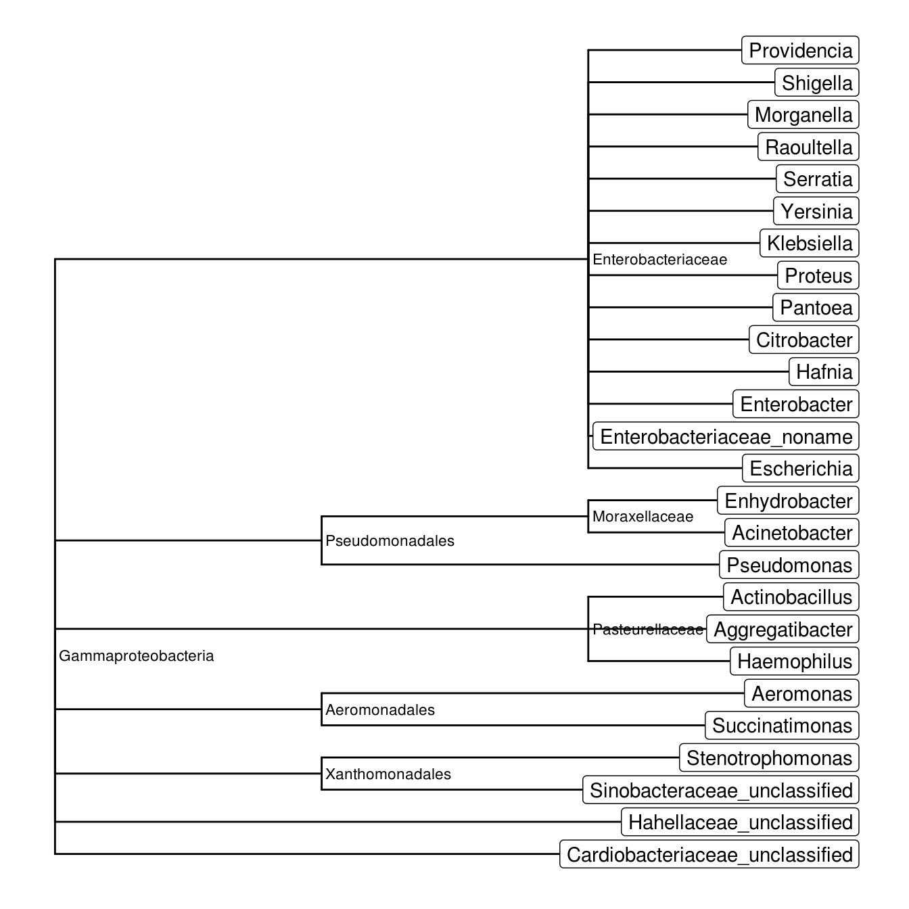

For this example, we use normalized data given in curatedMetagenomicData (Pasolli et al. (2017)) corresponding to the dataset from Zeller et al. (2014). We collect the lineages of bacteria present in 199 stool samples.
taxonomy <-
"ZellerG_2014.metaphlan_bugs_list.stool" %>%
curatedMetagenomicData(dryrun = FALSE) %>%
mergeData() %>%
exprs() %>%
as_tibble(rownames = "lineages") %>%
select(lineages)taxonomy
#> # A tibble: 1,585 x 1
#> lineages
#> <chr>
#> 1 k__Bacteria
#> 2 k__Viruses
#> 3 k__Bacteria|p__Firmicutes
#> 4 k__Bacteria|p__Bacteroidetes
#> 5 k__Bacteria|p__Actinobacteria
#> 6 k__Bacteria|p__Verrucomicrobia
#> 7 k__Bacteria|p__Proteobacteria
#> 8 k__Viruses|p__Viruses_noname
#> 9 k__Bacteria|p__Candidatus_Saccharibacteria
#> 10 k__Bacteria|p__Firmicutes|c__Clostridia
#> # … with 1,575 more rowsHere, we have all the present bacteria at all different ranks. As we are just interested in genera that belong to the Gammaproteobacteria class, we filter() the lineages with is_clade() and is_rank(). The genus name is accessible with last_clade().
taxonomy %>%
filter(is_clade(lineages, "Gammaproteobacteria"),
is_rank(lineages, "genus")) %>%
mutate(genus = last_clade(lineages))
#> # A tibble: 26 x 2
#> lineages genus
#> <chr> <chr>
#> 1 k__Bacteria|p__Proteobacteria|c__Gammaproteobacter… Escherichia
#> 2 k__Bacteria|p__Proteobacteria|c__Gammaproteobacter… Haemophilus
#> 3 k__Bacteria|p__Proteobacteria|c__Gammaproteobacter… Enterobacteriaceae_…
#> 4 k__Bacteria|p__Proteobacteria|c__Gammaproteobacter… Pseudomonas
#> 5 k__Bacteria|p__Proteobacteria|c__Gammaproteobacter… Enterobacter
#> 6 k__Bacteria|p__Proteobacteria|c__Gammaproteobacter… Aggregatibacter
#> 7 k__Bacteria|p__Proteobacteria|c__Gammaproteobacter… Hafnia
#> 8 k__Bacteria|p__Proteobacteria|c__Gammaproteobacter… Actinobacillus
#> 9 k__Bacteria|p__Proteobacteria|c__Gammaproteobacter… Sinobacteraceae_unc…
#> 10 k__Bacteria|p__Proteobacteria|c__Gammaproteobacter… Citrobacter
#> # … with 16 more rowsIt is useful to have a taxonomic table. taxtable() do the job.
gammap_table <-
taxonomy %>%
filter(is_clade(lineages, "Gammaproteobacteria"),
is_rank(lineages, "genus")) %>%
pull(lineages) %>%
taxtable()as_tibble(gammap_table)
#> # A tibble: 26 x 6
#> kingdom phylum class order family genus
#> <chr> <chr> <chr> <chr> <chr> <chr>
#> 1 Bacteria Proteobac… Gammaproteo… Enterobact… Enterobact… Escherichia
#> 2 Bacteria Proteobac… Gammaproteo… Pasteurell… Pasteurell… Haemophilus
#> 3 Bacteria Proteobac… Gammaproteo… Enterobact… Enterobact… Enterobacteria…
#> 4 Bacteria Proteobac… Gammaproteo… Pseudomona… Pseudomona… Pseudomonas
#> 5 Bacteria Proteobac… Gammaproteo… Enterobact… Enterobact… Enterobacter
#> 6 Bacteria Proteobac… Gammaproteo… Pasteurell… Pasteurell… Aggregatibacter
#> 7 Bacteria Proteobac… Gammaproteo… Enterobact… Enterobact… Hafnia
#> 8 Bacteria Proteobac… Gammaproteo… Pasteurell… Pasteurell… Actinobacillus
#> 9 Bacteria Proteobac… Gammaproteo… Xanthomona… Sinobacter… Sinobacteracea…
#> 10 Bacteria Proteobac… Gammaproteo… Enterobact… Enterobact… Citrobacter
#> # … with 16 more rowsTo have a tree, use taxtree() with a taxonomic table in input. By default, it collapses ranks with only one subrank.
gammap_tree <- taxtree(gammap_table)
gammap_tree
#>
#> Phylogenetic tree with 26 tips and 7 internal nodes.
#>
#> Tip labels:
#> Escherichia, Enterobacteriaceae_noname, Enterobacter, Hafnia, Citrobacter, Pantoea, ...
#> Node labels:
#> Gammaproteobacteria, Enterobacteriaceae, Pasteurellaceae, Pseudomonadales, Moraxellaceae, Xanthomonadales, ...
#>
#> Rooted; includes branch lengths.Instead of a classical plot, we use ggtree (Yu et al. (2017)) to display the tree.

Pasolli, Edoardo, Lucas Schiffer, Paolo Manghi, Audrey Renson, Valerie Obenchain, Duy Tin Truong, Francesco Beghini, et al. 2017. “Accessible, Curated Metagenomic Data Through Experimenthub.” Nat. Methods 14 (11): 1023–4. https://doi.org/10.1038/nmeth.4468.
Yu, Guangchuang, David Smith, Huachen Zhu, Yi Guan, and Tommy Tsan-Yuk Lam. 2017. “Ggtree: An R Package for Visualization and Annotation of Phylogenetic Trees with Their Covariates and Other Associated Data.” Methods in Ecology and Evolution 8 (1): 28–36. https://doi.org/10.1111/2041-210X.12628.
Zeller, Georg, Julien Tap, Anita Y Voigt, Shinichi Sunagawa, Jens Roat Kultima, Paul I Costea, Aurélien Amiot, et al. 2014. “Potential of Fecal Microbiota for Early-Stage Detection of Colorectal Cancer.” Molecular Systems Biology 10 (11). EMBO Press: 766.